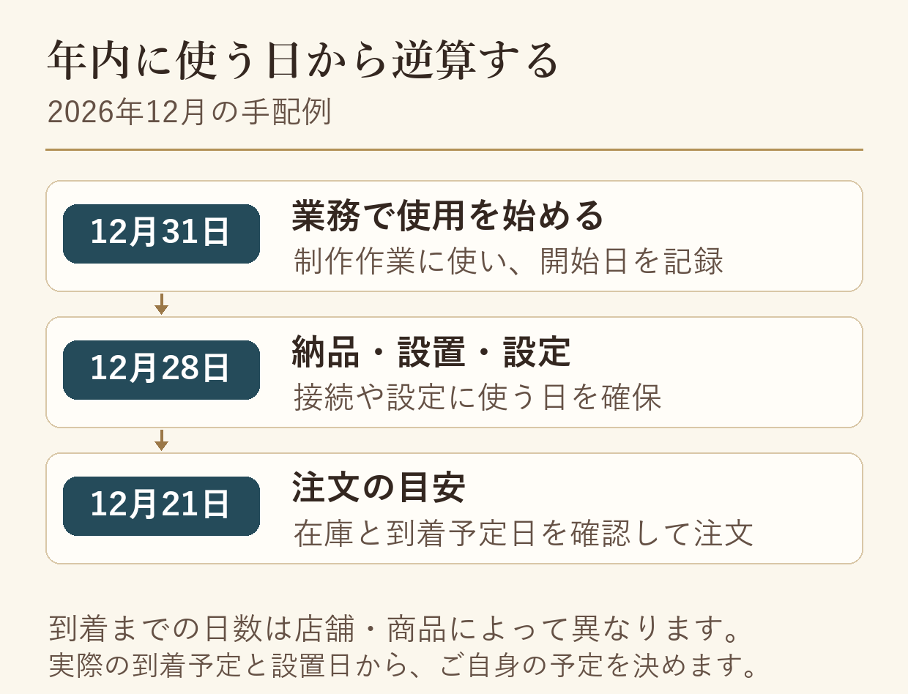

少額減価償却資産の40万円基準｜個人事業主の年末の買い物
個人事業主がパソコンなどの備品を2026年分の必要経費に入れるには、12月31日までに取得し、業務で使い始めていることが前提です。年内に注文や支払いを済ませても、使用を始めるのが年明けなら、2026年分には入りません。使い始めた年にいくら経費へ入れられるかは、取得価額と申告の条件で変わります。
この記事の要点
- 2026年4月1日以後に取得した備品は、一定の条件を満たす青色申告者なら、取得価額10万円以上40万円未満の範囲で特例を検討できます。年の上限は対象資産の合計で300万円です。
- 年内に使い始めるには、仕事で使う日から、設置・設定、納品、注文に必要な日数を逆算します。
- 出費は先に発生します。年明けに買う予定だった事業用の備品を、手元資金に無理のない範囲で検討しましょう。
制度・金額の確認日 2026年11月25日
取得価額で経費への入れ方を確認する
2026年4月1日以後に取得し、同年中に業務で使い始めた備品の目安です。ここでは、使用可能期間が1年以上で、仕事専用の備品を想定します。
| 取得価額 | 通常の扱いと選べる方法 | 青色申告者の特例を使える場合 |
|---|---|---|
| 10万円未満 | 使用を始めた年に全額を必要経費に入れます。 | 40万円未満の特例を使う区分ではありません。 |
| 10万円以上20万円未満 | 通常の減価償却のほか、条件を満たせば一括償却を選び、使用を始めた年から3年に分けて、毎年3分の1ずつを経費に入れられます。 | 特例を選ぶと取得価額の全額を使用開始年に入れられます。同じ資産に一括償却と特例の両方は使えません。 |
| 20万円以上40万円未満 | 通常の減価償却で、耐用年数に応じて経費に入れます。 | 特例を選ぶと取得価額の全額を使用開始年に入れられます。 |
| 40万円以上 | 通常の減価償却で、耐用年数に応じて経費に入れます。 | 40万円ちょうどから、この特例の対象外です。 |
2026年3月31日までに取得した備品を年内に使い始めた場合、特例の取得価額の基準は30万円未満です。40万円未満に変わる境目は取得日で判定します。何年分の経費に入るかは、実際に業務で使い始めた日で決まります。改正後の特例は、2029年3月31日までの取得分が対象です。
取得価額の判定は、税込経理なら税込、税抜経理なら税抜です。消費税の免税事業者は税込です。普段の経理方法を確認してください。使用可能期間が1年未満の資産は、取得価額とは別の基準で、使用を始めた年に必要経費へ入れる扱いがあります。2022年4月1日以後に取得した貸付け用の資産は、主要な業務として行う貸付けに用いるものを除き、少額の資産・一括償却・青色申告者の特例の扱いが使えません。
領収書と、仕事で使い始めた日の記録を一緒に残しておくと、あとで帳簿にまとめやすくなります。
金額の例で違いを確認する
自宅でデザインの仕事をする個人事業主が、来年の案件に備えて作業用のモニターやパソコンの買い替えを検討しているモデルケースです。以下は判定のために置いた金額で、販売価格ではありません。税込経理で、各備品は仕事専用とします。
- 9万8千円のモニター。10万円未満なので、2026年中に業務で使い始めれば、9万8千円を2026年分の必要経費に入れます。
- 15万円の机と椅子。取引上通常ひと組で扱われ、一組の取得価額が15万円と判定される例です。一括償却を選べば、15万円を3年に分けて毎年5万円。青色申告者の特例の要件を満たせば、特例を選んで2026年分に15万円を入れる方法もあります。
- 35万円のパソコン。2026年4月1日以後に取得し、年内に業務で使い始めた場合、特例の要件を満たす青色申告者は、年の上限の範囲内で35万円を2026年分の必要経費に入れられます。
- 45万円の撮影機材。通常の減価償却で、12月に業務で使い始めた場合の使用月数は1か月です。2026年分は、耐用年数などから求めた1年分の償却額の12分の1です。
特例で扱う資産の取得価額の合計にも注意してください。たとえば、35万円の対象資産が8点なら280万円ですが、9点なら315万円になり、年間300万円の枠を超えます。枠を超えそうな場合は、どの資産に特例を使えるか、申告前に税務署や税理士に確認しましょう。
仕事で使う日から納品と注文を逆算する
モニターなら、届いた箱を開けた日や動作を試した日を記録するだけでは足りません。設置と接続を済ませ、実際に制作作業で使い始めた日を記録します。注文日や支払日、納品日と分けておくと、年をまたいだときに判断しやすくなります。

たとえば12月31日に仕事で使う予定なら、12月28日までに納品を受け、設置と設定を進める日を確保します。この例の注文の目安は12月21日です。配送にかかる日数は店舗や商品によって異なります。受け取れる日を確かめ、予備日を含めてご自身の注文日を決めてください。年内の使用開始が難しい場合は、翌年の使用開始として予算を組み直します。
買い替える物が決まっていれば、在庫と届け先を入れて納品予定を見てから、注文するか考えましょう。
年内に買う物を絞る
必要経費にできる場合でも、商品の代金はその時点で支払います。経費に入る額と、実際に減る税額は異なります。年明けまで今の機材で仕事が続けられるなら、急いで買う必要はありません。買い替えの予定があり、次の支払いに必要な資金を残せる備品から考えます。
特例を検討する際は、2026年分の青色申告の承認を受けていることと、事業規模などの対象要件を満たすことが条件です。資産ごとの取得日・使用開始日、特例を使う資産の年間合計、貸付け用に該当しないかも確認します。白色申告や特例の要件を満たさない場合は、表の「通常の扱いと選べる方法」をご覧ください。
この記事は事業所得のある個人事業主を対象にしています。副業収入を雑所得として申告している場合は、青色申告者の特例を前提に判断しないでください。家庭でも使う機材や、取得価額を一組で判定できるか迷う備品は、使い方と領収書を整理して、税務署や税理士に相談してください。
制度の確認日 2026年11月25日